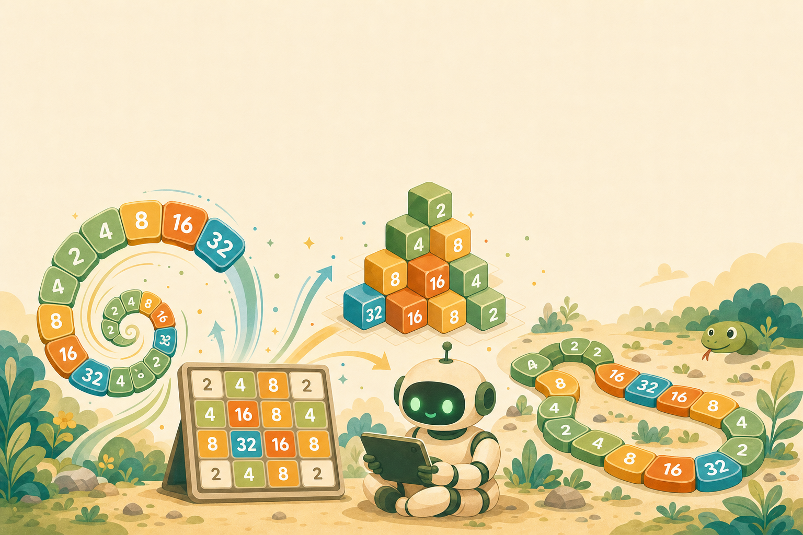

颱風天線上限定課 · 第 1 節認識 2048 與成長的祕密
原版 2048 · 玩出指數與線性
中高年級 · 40 分鐘 · 在家動手玩
中高年級 · 40 分鐘 · 在家動手玩
02線上課默契
上課前，先約好四件事
默契一
開鏡頭、關麥克風
看得到你，但先靜音。
默契二
答案打留言區
老師問問題，就打進聊天室。
默契三
先收表情貼圖
貼圖會洗版，這節先收起來。
默契四
發言先舉手
老師點到你，再開麥。
03給家長的話
給爸爸媽媽的話
孩子會一直盯著螢幕玩遊戲，先別擔心。2048 看起來在玩，其實藏著很多數學。
您可以這樣陪
- 讓孩子自己玩，卡關也沒關係
- 晚上一起挑戰，看誰先合出 1024

01
先認識它
2048
到底怎麼玩？
到底怎麼玩？
先搞懂規則，等一下就換你親手玩。
05什麼是 2048
2048 的玩法
- 4×4 盤面：16 格的小棋盤。
- 滑一下：兩個一樣的數字相撞就合併。
- 目標：一路合併，拼出 2048。
06操作說明
怎麼動？兩種裝置都會
電腦版
用鍵盤方向鍵
按上下左右，方塊就往那邊滑。
手機 / 平板版
用手指滑
手指往上下左右滑，方塊就移動。兩個一樣的相撞，就合併成它們的和。
07留言區即時問答
這一步，你會往哪滑？
先別動手，看這個盤面：往哪邊滑最好？打在留言區。
留言區打 1 / 2 / 3 / 4
- 1 ＝ 上 2 ＝ 下
- 3 ＝ 左 4 ＝ 右
08分組時間
分組時間
試玩 2048
10 分鐘
進各組實際玩原版 2048，留言區回報你拼到多少分。
打開：numeracy-learn-kit.web.app/game/2048-basic/
09試玩計時挑戰
分組進行中
目標：合出 64 或 128
10 分鐘
在自己的裝置上玩，先別急著往下噢。組內比比看誰拼最大。
02
成長的祕密
為什麼
越玩越大？
越玩越大？
你剛剛撞到的，是一個叫「翻倍」的魔法。
11合併＝相加
你玩到的：合併＝相加，而且一路翻倍
每一步，都是上一步的兩倍。
12存錢大挑戰
存錢大挑戰：10 天後，哪個撲滿比較多？
方案 A
每天存 10 元
穩穩地加
方案 B
第 1 天存 1 元，之後每天存兩倍
1 → 2 → 4 → 8 → …
在留言區打：你猜哪個多？A 還是 B
13翻倍反超
第 6 天，翻倍反超！
方案 B（翻倍）
方案 A（每天 10 元）
一開始翻倍輸很多，但不到「一個禮拜」就反超——這就是「指數」的力量。
14米粒傳說 · 預測
棋盤 64 格，第 1 格 1 粒、每格翻倍，最後一格要幾粒？
1 一碗飯
2 一卡車
3 一座山
4 比一座城市還多
在留言區打你猜的數字
傳說裡，國王覺得「不過幾粒米」就答應了。你覺得呢？
15米粒傳說 · 一把尺
這麼大的數，怎麼想像？先找一把尺。
先立一把尺
一碗飯 ≈ 2,000 多粒米
差不多就是棋盤的第 12 格
2×2×2×2×2×2×2×2×2×2×2
＝ 2,048 （11 個 2 連乘）
記住這把尺——往後我們就用「幾碗飯、幾年的米」來感覺這些大得誇張的數字。
16米粒傳說 · 第 47 格
才到第 47 格，就等於全台灣一整年的稻米！
全台灣一年種的米 ≈ 140 萬公噸 ≈ 這一格
棋盤才走到第 47 格
第 47 格的米粒 ＝
2×2×2×…×2
46 個 2 連乘
≈ 70 兆 粒
第 12 格才一碗飯，只過了 35 格，就變成全台灣一整年的米。
假設：每粒米 ≈ 0.022 克、台灣稻米年產約 140 萬公噸。
17米粒傳說 · 總數揭曉
64 格全部加起來……
2×2×…×2
64 個 2 連乘
約 1,845 京 粒
＝ 18,446,744,073,709,551,615 粒米
約 500 萬倍
花蓮一整年種的稻米，要這麼多倍才夠
約 39 萬年
夠全台灣人從現在一直吃這麼久
這就是「一直翻倍」的力量——連國王都賠不起。
假設：每粒米 ≈ 0.022 克、台灣稻米年產約 140 萬公噸。
03
換你找訣竅
怎麼玩
才能拼更大？
才能拼更大？
再玩一次，這次邊玩邊找：有沒有什麼訣竅？
19分組時間
分組時間
第二次玩・找訣竅
5 分鐘
回到原版再玩一場，組內討論怎樣拼更大，訣竅打留言區。
打開：numeracy-learn-kit.web.app/game/2048-basic/
20第二次玩 · 找訣竅
分組進行中
邊玩邊想：
有什麼訣竅能拼更大？
有什麼訣竅能拼更大？
5 分鐘
試試看：固定往幾個方向滑？大的數字放哪裡？5 分鐘後回來分享。
21總結訣竅
玩完，一起歸納出兩個訣竅
訣竅一
把最大的放角落
整局把最大的數字鎖在同一個角，別讓它被推走。角落只有兩邊會動，最穩。
訣竅二
由大到小排好
從那個角開始，讓數字由大到小排成一排，別讓大的卡在中間，隨時都有得合併。
今天先記這兩個。下一節，還有更厲害的高手訣竅。
22伏筆 · 接下一節
可是 16 格
一下就塞滿了……
一下就塞滿了……
一顆 2048 底下藏著好多顆 2、要合併上千次。光靠運氣夠嗎？下一節，談高手的訣竅。
第一節課，我們看到了遊戲裡的數學
合併＝相加、一路翻倍，這就是「指數成長」。下課時間，休息一下。
下一節，我們來看高手怎麼贏。
下一節，我們來看高手怎麼贏。

L2 ‧ 翻倍的威力與高手訣竅倍數的力量
2048：玩出數學腦 ‧ 颱風天線上課
01
CHAPTER 01
你覺得最厲害的
能玩到幾分
能玩到幾分
先猜一猜，答案可能比你想的還誇張。
26留言區｜猜世界紀錄
猜猜看：2048 最高能拼到多大？
▶在「留言區」打出你的答案：1／2／3／4
1
2048
破關就頂了。
2
4096
再翻一倍。
3
一萬多
高手才到。
4
六萬多
真有人做到。
27揭曉｜世界紀錄
答案揭曉：真實的世界紀錄
世界最高紀錄
65536
標準「4×4」盤面，就是 2 連乘 16 次。
明明只是一直翻倍，最後居然長到六萬多——真的有人做到。

五月天 阿信的 2048 紀錄：65536
28先用 16 看清楚｜幾個 2、合幾次
拼出 16，需要幾個 2？要合幾次？
把每個「2」想成參賽選手：要拼出 16，得先湊齊 8 個 2。
一路兩兩合併
- 先合 4 次 → 變成 4 個「4」
- 再合 2 次 → 變成 2 個「8」
- 再合 1 次 → 變成 1 個「16」
兩個不一樣的數：需要 8 個 2，卻只合 4＋2＋1＝7 次——像淘汰賽，8 個選手要打 7 場才選出冠軍。
29放大到 65536｜兩個問題
放大到世界紀錄：拼 65536 要多少？
問題① 需要幾塊（幾個 2）？
32768個
65536 ＝ 2 連乘 16 次，得先湊滿 32768 塊「2」（也就是 2 連乘 15 次）。
問題② 要合成幾次？
32767次
32768 − 1。像淘汰賽：32768 個選手，打 32767 場才選出 1 個冠軍。
需要的塊數＝ 最大數字 ÷ 2例：65536 ÷ 2 ＝ 32768 塊
需要合成的次數＝ 塊數 − 1例：32768 − 1 ＝ 32767 次
30影片｜摺紙上月球
翻倍有多猛？一張紙摺到月球

▶ 點擊播放
對摺 42 次，就能上月球
一張紙不斷對摺，每摺厚度翻倍，大約 42 次就能碰到月球。
31從加法到次方
換個寫法，又短又好懂
連加
3＋3＋3＋3
→
轉換成乘法
3×4
連乘
2×2×2×2×2
→
寫成次方
2⁵
比較好懂
右側更好懂，更清楚，這就是學更多數學的好處。
32個十百千萬
個十百千萬、億、兆，都是 10 的次方
個
1
＝ 10⁰
十
10
＝ 10¹
百
100
＝ 10²
千
1,000
＝ 10³
萬
10,000
＝ 10⁴
億
100,000,000
＝ 10⁸
兆
1,000,000,000,000
＝ 10¹²
332048 ＝ 2¹¹
2048，就是 2 連乘 11 次。
2×2×2×2×2×2×2×2×2×2×2
11 個 2 連乘
＝ 2¹¹ ＝ 2,048
每合併一次，次方就加 1。
34分組進行｜玩第二次
分組時間
玩第二次
10 分鐘
進到各組，一起玩原版 2048。帶著「翻倍、次方」的眼光，組內互相挑戰拼更高。
35分組進行｜怎麼操作
分組進行中
怎麼操作：兩種載具，兩種滑法
10 分鐘
電腦版
用鍵盤方向鍵
按上下左右，盤面就往那邊靠過去。
平板‧手機版
用手指滑
往哪邊滑，磚就往哪邊靠。
36分組進行｜計時挑戰
分組進行中
計時挑戰：帶著新眼光，再玩一局
10 分鐘
先別急著往下喔！用「翻倍」和「次方」的眼光，再玩一局原版 2048。
- 挑戰比上次更高的磚
- 看數字怎麼一路翻倍
- 組內互相報告最大的磚
02
CHAPTER 02
高手的
第一個訣竅
第一個訣竅
玩了兩次，發現光靠運氣不夠用了吧？
38為什麼會卡住
玩著玩著，盤面就動不了
最大的磚跑到中間擋路，兩邊合不到，空格越來越少。
卡住的徵兆
- 大磚卡在正中央
- 想合的兩顆湊不到
- 滑哪邊都沒反應
39好盤面 vs 壞盤面
同一個遊戲，兩種盤面
亂玩的盤面
- 大磚
- 卡在中間擋路
- 空格
- 越來越少
- 結果
- 很快就動不了
整齊的盤面
- 大磚
- 釘在角落
- 排法
- 由大到小蛇形
- 結果
- 一滑連著合
40為什麼不能擺中間
為什麼大磚不能擺中間？
1
把盤面切成兩半、互相擋路
左右小磚過不去。
2
中間的大磚幾乎長不大
餵不到同樣大的磚。
3
每滑一次就亂跑
往哪滑就往哪跑。
所以——最大的磚，要靠牆、釘角落。
41第一招｜角落
第一招：最大的磚，釘在角落
挑一個角落當基地，讓最大的磚一直待在那裡。
為什麼角落好
- 角落只連兩個方向，不易被推走
- 大磚不擋路，中間就空出來操作
42第二招｜蛇形
第二招：由大到小，排成一條蛇
從角落大磚開始，沿 S 形把數字由大排到小，像一條蛇。
這樣排的好處
- 相鄰常剛好差一級，很好合
- 盤面整齊，合併才會源源不絕
43第三招｜少用方向
第三招：留一個方向，先不亂用
大磚釘在右下角以後，有一個方向會把它推走。那個方向先收起來，當最後的救命招。
怎麼做
- 平常主要只用 下、右、左 三個方向
- 「往上」會把角落大磚推走，盡量別用
- 真的卡到不能動，才用它救一步
44進階｜連鎖合併
進階：先忍住，再一次引爆
1
布局
同一級的數字，先排到同一條線。
2
忍住
看到能合先別急，把位置鋪好。
3
一滑
排好了，往基地方向滑一下。
4
引爆
一連串合併，最大磚一口氣跳好幾級。
45這些招哪來的｜啟發式
這些招，是大家「一起玩」出來的
沒有發明人
不是某個人想到的
角落、蛇形、少用方向，都沒有單一發明人。
一起玩出來
全世界玩家的共識
2048 爆紅後，大家邊玩邊分享，慢慢玩出這些好規則。
很有效
好用，但沒被證明最好
這種「好用卻沒被證明最好」的規則，叫「啟發式」（heuristic）。
角落
蛇形
少用方向
46分組討論｜發想新玩法
分組時間
發想新玩法
5 分鐘
進到各組討論：2048 還能怎麼變？想一個新玩法，等一下舉手上台分享。
47分組進行｜發想方向
分組進行中
想想看：2048 還能怎麼變？
5 分鐘
方向一
換數字規則
不一定要翻倍，改成相鄰兩個相加？
方向二
換盤面形狀
不只 4×4，變大、變立體、變三角？
方向三
加新道具
炸彈、除以 2、洗牌，多點變化？
48下節預告｜各種變形
下一節，玩這些變形
費氏版 2584
- 規則
- 相鄰費氏數相加
- 數學
- 黃金比例
- 下次
- 第三節玩
立體 3D 版
- 盤面
- 3×3×3
- 方向
- 六個
- 下次
- 第三節玩
貪食蛇版
- 形式
- 即時對戰
- 對手
- 內建 AI
- 下次
- 第三節玩
下一節，2048 大變身
更進一步學會次方表示法（2048＝2¹¹），也學會進階的思考策略。下一節我們換數字、換盤面，還要看 AI 怎麼玩。

L3 ・ 2048 數學實驗課2048 大變身與 AI
01
CHAPTER 01
換一套數字
遊戲就變身
遊戲就變身
費氏 2584：同一個 2048，數字規則全換掉
52費氏數列
費氏數列：每個數都是前兩個相加
53兔子問題
這串數字，是兔子生出來的

13 世紀的數學家費波那契出了一道謎題：一對兔子，每個月生一對小兔。一個月一個月數下去，兔子的對數剛好排成 1、1、2、3、5、8……
54分組時間
分組時間
費氏 2584 試玩
5 分鐘
玩費氏 2584：相鄰的費氏數相加，看哪一組先合出 233。
打開：numeracy-learn-kit.web.app/game/fibonacci-2584
55費氏 2584 試玩
56留言區作答
留言區作答：手上是「55」，要找誰合？
把號碼 ①／②／③ 打在留言區，先猜再揭曉。
57黃金比例
藏在花和貝殼裡的 1.618
把相鄰的兩個費氏數相除，會越來越接近 1.618——也就是黃金比例。照著費氏方塊一格一格畫弧線，就連成一條螺旋；它也藏在向日葵、鸚鵡螺和松果裡。
 鸚鵡螺殼剖面 · Chris 73 / Wikimedia Commons（CC BY-SA 3.0）
鸚鵡螺殼剖面 · Chris 73 / Wikimedia Commons（CC BY-SA 3.0）02
CHAPTER 02
換一個方向
看世界
看世界
從平面國到立體 3D：多一個維度，腦袋就轉不過來
59影片・平面國
二維生物，看得懂三維嗎？
《平面國》裡的生物住在一張平面上，從沒看過「上下」。多一個方向，有多難想像？
影片：TED-Ed《探索其他維度》（4:49）

60維度介紹
多一個方向，選擇就暴增
平面版 4×4 ＝ 16 格、只能 4 個方向。立體版 3×3×3 ＝ 27 格、6 個方向，還多了看不到的內層。
升一維，多了什麼
- 格子：16 → 27
- 方向：4 → 6
- 多了看不見的中間層
61分組時間
分組時間
立體 3D 試玩
5 分鐘
玩立體 3D 2048：3×3×3、六個方向，挑戰合出比平面版更高的方塊。
打開：numeracy-learn-kit.web.app/game/2048-3d
62立體 3D 試玩
分組進行中
5 分鐘
玩玩看：立體 3D 2048
03
CHAPTER 03
換 AI 來玩
電腦怎麼想幾步、算機率，玩得比人還強？
64現場看 AI 玩
現場看 AI 自己玩一次

65AI 的玩法
AI 的玩法：
想幾步＋算機率
想幾步＋算機率
- 往前想好幾步
- 每一步都算機率、挑最好的
- 把訣竅算到極致，玩得比人強
66分組時間
分組時間
貪食蛇試玩
5 分鐘
玩貪食蛇 2048：在即時競技場，跟內建 AI 對手對戰。
打開：numeracy-learn-kit.web.app/game/snake-2048
67貪食蛇試玩
分組進行中
5 分鐘
玩玩看：貪食蛇 2048
68課程回顧
三節課，我們一路玩過來
1第一節
成長規律
- 2→4→8 翻倍＝指數成長
- 比一直加快太多
→
2第二節
次方與角落訣竅
- 2048＝2 連乘 11 次（2¹¹）
- 大磚釘角落、排成樓梯，合併才順
→
3第三節
大變身與 AI
- 換數字（費氏）、換維度（立體）、換對手（AI）
- AI 想幾步＋算機率，玩得比人強
69昇華金句
數學，是一種超能力。
好策略＞蠻力，遊戲裡、生活裡都一樣。
下次見
三節課，我們和 AI 一起把 2048 玩過一輪。回家揪爸媽再玩立體版、貪食蛇，挑戰打贏 AI！